4 Draft Future Projections
4.1 Global Climate Modeling
Projecting future climate on a global scale requires modeling many intricate relationships between the land, ocean, and atmosphere. Many global climate and Earth system models exist, each varying in complexity, capabilities, and limitations.
Consider one of the simplest forms of a model used for future projections, a linear regression model (Figure 4.1). With this model, researchers would plot a climate variable (e.g., temperature) over time, draw a best-fit, straight line through the data, and then extend the line into the future. That line, then, provides a means of projecting future conditions. Whether or not those projections are valid is a separate question. For example, the model may be based on false assumptions: the relationship may a) not be constant through time, b) not include outside influences such as human interventions (e.g., policy regulations), and c) not consider system feedbacks that might enhance or dampen the relationship being modeled.

While the linear regression model provides an instructive visual aid for considering modeling, it is too simple for looking at climate changes, in which the interactions are complex and often nonlinear. For example, if temperatures rises, evaporation is expected to increase. At the same time, increasing temperatures increase the atmosphere’s capacity to hold water. Water is a greenhouse gas so more water in the atmosphere means the atmosphere can absorb more heat… thus driving more evaporation. What seemed a simple relationship has changed (possibly dramatically) because of this feedback between temperature, evaporation, and the water-holding capacity of the atmosphere.
Linear models do not account for such nonlinear relationships. Instead, climate scientists account for nonlinearity through computer simulations that describe the physical and chemical interactions between the land, oceans, and atmosphere. These simulations, which project climate change into the future, are called general circulation models (GCMs; see sidebar)
Because of the complexities involved, climate scientists rarely rely on a single model, but instead use an ensemble (or suite) of models. Each model in an ensemble represents a single description of future climate based on specific initial conditions and assumptions. The use of multiple models helps scientists explore the variability of future projections (i.e., how certain are we about the projection) and incorporate the strengths, as well as uncertainties, of multiple approaches.
For the work of the Montana Climate Assessment, we employed an ensemble from the sixth iteration of the Coupled Model Intercomparison Project (CMIP6), which includes over 100 GCMs depending on the experiment conducted (1). The World Climate Research Program describes CMIP as “a standard experimental protocol for studying the output” of GCMs (2). It provides a means of validating, comparing, documenting, and accessing diverse climate model results. The CMIP project dates back to 1995, with the sixth iteration (CMIP6) starting in 2016 and providing climate data for the latest IPCC Sixth Assessment Report (3).
We employed 8 individual GCMs from the CMIP6 project for the Montana Climate Assessment ensemble, chosen because they provide daily outputs and are found to have a realistic performance over North America (4)
The benefits of using CMIP6 data are that each model in the ensemble a) has been rigorously evaluated, and b) uses the same standard socioeconomic trajectories—known as Shared Socioeconomic Pathways (SSPs)—to describe future greenhouse gas emissions. “The SSPs are based on five narratives describing alternative socio-economic developments, including sustainable development, regional rivalry, inequality, fossil-fueled development, and middle-of-the-road development” (5)
For the Montana Climate Assessment, we explore the SSP1, SSP2, SSP3, and SSP5 scenarios.
Due to their complexity and global extent, GCMs can be computationally intensive. Thus, scientists often make climate projections at coarse spatial resolution where each projected data point is an average value of a grid cell that measures hundreds of miles (kilometers) across.
For areas where the terrain and land cover are relatively homogenous (e.g., an expanse of the Great Plains), such coarse grid cells may be adequate to capture important climate processes. But in areas with complex landscapes like Montana, data points so widely spaced are inadequate to reflect variability in terrain and vegetation and their influence on climate. A 100 mile (161 km) grid, for example, might not capture the climate effects of a small mountain range rising out of the eastern Montana plains or the climate differences between mountain summits and valleys in western Montana where temperature and precipitation vary greatly.
To capture such important terrain characteristics, scientist take the coarse-resolution output from a GCM and statistically attribute the results from those models to smaller regions at higher resolution (e.g., grid points at 1 mile rather than 100 mile apart). This process, called downscaling, more accurately represents climate across smaller, more complex landscapes, including Montana.
For this climate assessment, we used a statistical downscaling method called the Multivariate Adaptive Constructive Analogs. By using a downscaled dataset—rather than the original output from the ensemble of GCMs—we gained the ability to evaluate temperature and precipitation at relatively high resolution statewide before conveying the results at the climate division scale. Additionally, we were able to aggregate data points within each of Montana’s seven climate divisions (Figure 2-3), and look at Montana’s climate future in different geographic areas. Aggregating to the climate-division level minimizes the potential for false precision by reporting results at spatial scales that better represent underlying climate processes.
The 8 downscaled GCMs in CMIP6 were evaluated at two future time periods: 1) mid century (2040–2069) and 2) end-of-century (2070–2099). Thirty-year averages of these future projections were then compared to a historical (1981–2010) 30-year average, which results in a projected difference, or change, from historical conditions. We make those projections using the stabilization the four SSPs outlined above. These future projections were then compared to the historical trends in Montana to reveal the major climate-associated changes that Montana is likely to experience in the future.
4.2 Temperature Projections
Below we provide projections for various aspects of Montana’s future temperature based on our modeling analysis.
We discuss a subset of our modeling results here, including a) temperature projections reported by the median values of the 8 GCM ensemble and b) figures that include maps and graphs that represent the median value and distribution of values observed for temperature across the 8 GCMs.
4.2.1 Average Annual Temperatures
Figure 4.2 shows projected changes in average annual temperatures across all Climate Divisions for both the mid- and end-of-century. Below, projected changes in average annual temperature across the domain and associated model agreements are given:
- Mid-century: Across the domain, the majority of SSP scenarios project that the average annual temperature in the mid-century will increase. Changes in average annual temperature across SSPs range from 3.6 °F (100% model agreement) to 5.48 °F (100% model agreement)
- End-of-century: Across the domain, the majority of SSP scenarios project that the average annual temperature in the end-of-century will increase. Changes in average annual temperature across SSPs range from 3.65 °F (100% model agreement) to 9.23 °F (100% model agreement)
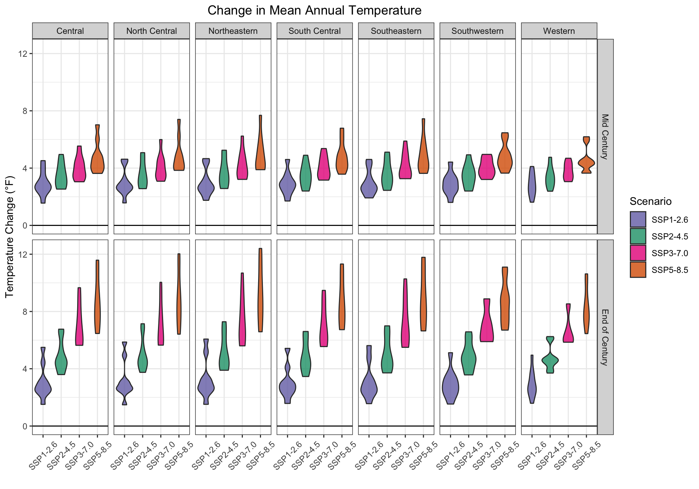
r params$attr_name across all SSP scenarios. The top row shows mid-century (2040-2069) projections and the bottom row shows end-of-century (2070-2099) projections.4.2.2 Average Daily Minimum Temperatures
Figure 4.3 shows spatially distributed changes in minimum annual temperature across all Climate Divisions for both the mid- and end-of-century. Below, projected changes in both minimum temperature and associated model agreements are given for the entire domain:
- Mid-century: Across the domain, the majority of SSP scenarios project that the average annual minimum temperature in the mid-century will increase. Changes in average annual minimum temperature across SSPs range from 3.54 °F (100% model agreement) to 5.53 °F (100% model agreement)
- End-of-century: Across the domain, the majority of SSP scenarios project that the average annual minimum temperature in the end-of-century will increase. Changes in average annual minimum temperature across SSPs range from 3.51 °F (100% model agreement) to 9.34 °F (100% model agreement)
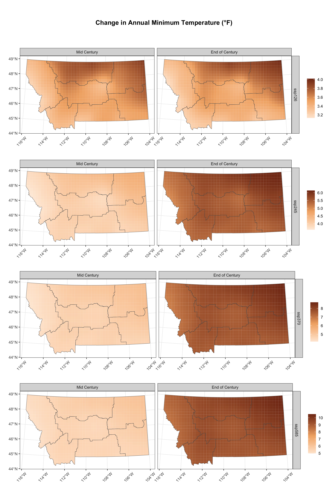
4.2.3 Average Daily Maximum Temperatures
Figure 4.4 shows spatially distributed changes in maximum annual temperature across all Climate Divisions for both the mid- and end-of-century. Below, projected changes in both maxiimum temperature and associated model agreements are given for the entire domain:
- Mid-century: Across the domain, the majority of SSP scenarios project that the average annual maximum temperature in the mid-century will increase. Changes in average annual maximum temperature across SSPs range from 3.66 °F (100% model agreement) to 5.43 °F (100% model agreement)
- End-of-century: Across the domain, the majority of SSP scenarios project that the average annual maximum temperature in the end-of-century will increase. Changes in average annual maximum temperature across SSPs range from 3.78 °F (100% model agreement) to 9.12 °F (100% model agreement)
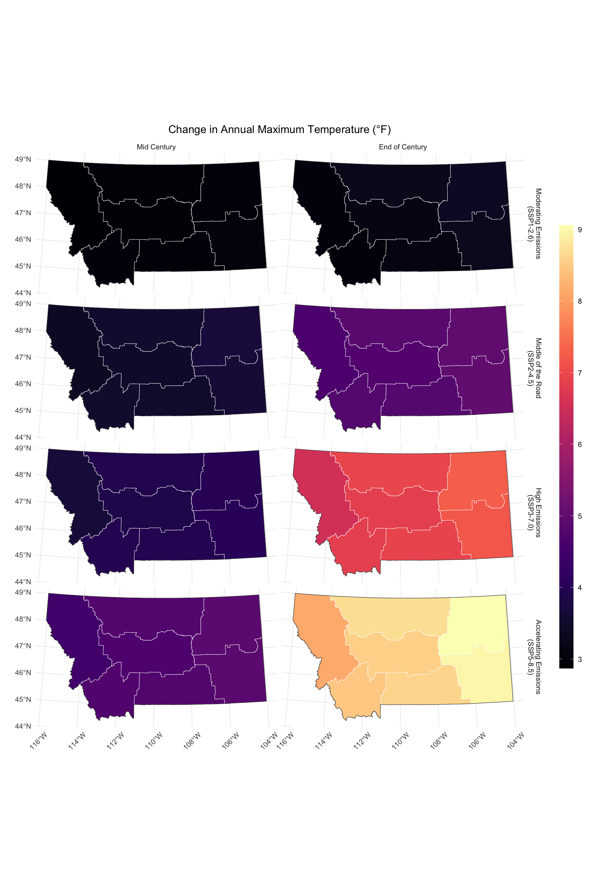
r params$attr_name in params$location for the periods 2049-2069 and 2070-2099 for all SSP scenarios4.2.4 Average Monthly Temperatures
Figure 4.5 shows projected changes in average monthly temperatures across all Climate Divisions for both the mid- and end-of-century. Below, projected changes in average monthly temperature across the domain and associated model agreements are given:
- Mid Century: Average Temperature is projected to increase in the Winter, with values ranging from 3.47 °F to 5.22 °F (100% model agreement) depending on the SSP scenario. Average Temperature is projected to increase in the Spring, with values ranging from 3.29 °F to 4.5 °F (100% model agreement) depending on the SSP scenario. Average Temperature is projected to increase in the Summer, with values ranging from 3.65 °F to 6.23 °F (100% model agreement) depending on the SSP scenario. Average Temperature is projected to increase in the Fall, with values ranging from 3.99 °F to 5.99 °F (100% model agreement) depending on the SSP scenario.
- End of Century: Average Temperature is projected to increase in the Winter, with values ranging from 3.22 °F to 8.67 °F (99% model agreement) depending on the SSP scenario. Average Temperature is projected to increase in the Spring, with values ranging from 3.17 °F to 7.39 °F (100% model agreement) depending on the SSP scenario. Average Temperature is projected to increase in the Summer, with values ranging from 4.14 °F to 10.88 °F (100% model agreement) depending on the SSP scenario. Average Temperature is projected to increase in the Fall, with values ranging from 4.06 °F to 10.02 °F (100% model agreement) depending on the SSP scenario.
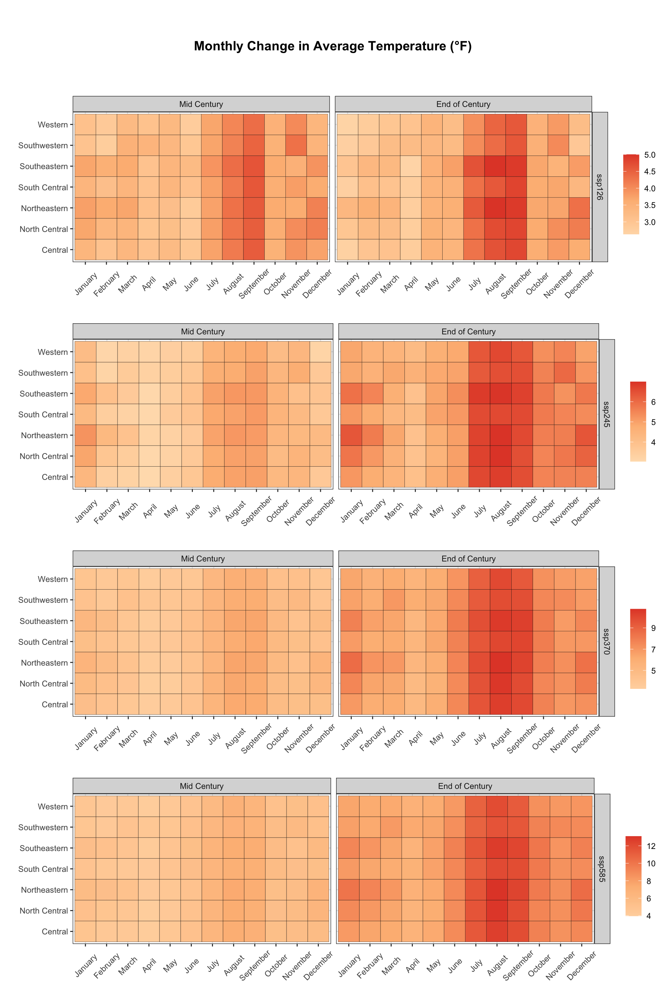
r params$attr_name in params$location in the mid-century (2040-2069) and end-of century (2070 - 2099) for all SSP scenarios4.2.5 Number of Days Above 90°F (32°C)
Figure 4.6 and Figure 4.7 show projected changes in number of days above 90°F for both the mid- and end-of-century. Below, projected changes in days above 90°F across the domain and associated model agreements are given:
- Mid-century: Across the domain, the majority of SSP scenarios project that the number of days above 90°F in the mid-century will increase. Changes in number of days above 90°F across SSPs range from 14.16 days (100% model agreement) to 26.85 days (100% model agreement)
- End-of-century: Across the domain, the majority of SSP scenarios project that the number of days above 90°F in the end-of-century will increase. Changes in number of days above 90°F across SSPs range from 17.35 days (100% model agreement) to 48.97 days (100% model agreement)
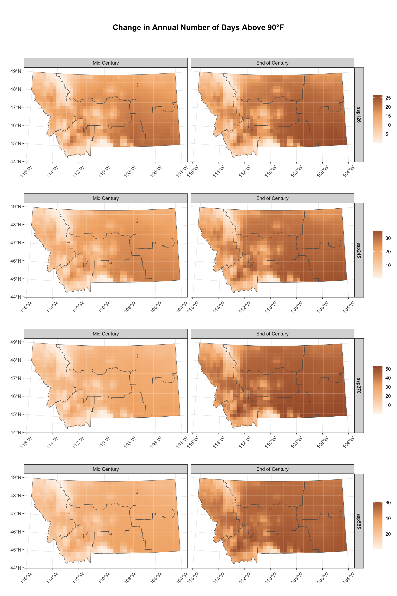
r params$attr_name in params$location over two periods 2040-2069 and 2070-2099 for all SSP scenarios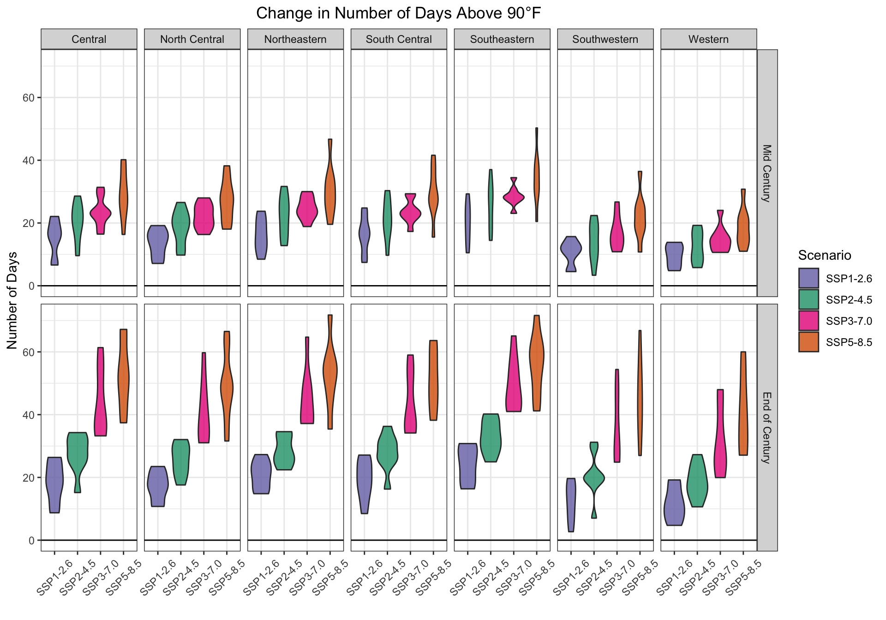
r params$attr_name all SSP scenarios and both mid-century (2040-2069) and end-of-century (2070-2099) projections.4.2.6 Number of Days Where Minimum Temperatures are Above 32°F (0°C)
Figure 4.8 and Figure 4.9 show projected changes in number of days freeze-free days for both the mid- and end-of-century. Below, projected changes in the number of freeze-free days across the domain and associated model agreements are given:
- Mid-century: Across the domain, the majority of SSP scenarios project that the number of freeze-free days in the mid-century will increase. Changes in number of freeze-free days across SSPs range from 22.29 days (100% model agreement) to 32.1 days (100% model agreement)
- End-of-century: Across the domain, the majority of SSP scenarios project that the number of freeze-free days in the end-of-century will increase. Changes in number of freeze-free days across SSPs range from 21.02 days (100% model agreement) to 55.11 days (100% model agreement)
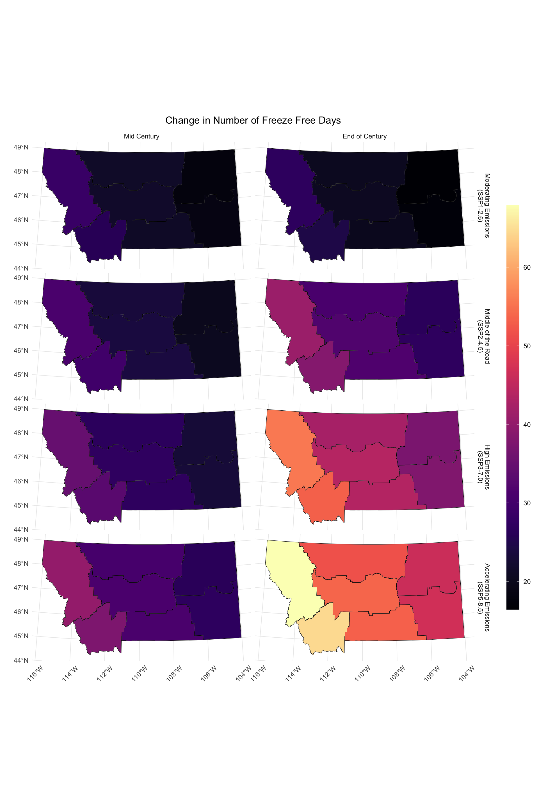
r params$attr_name in params$location over two periods 2040-2069 and 2070-2099 for all SSP scenarios.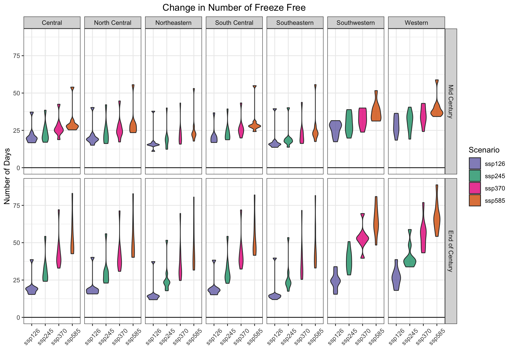
r params$attr_name across all SSP scenarios. The top row shows mid-century projections (2040-2069) and the bottom row shows end-of-century projections (2070-2099).4.2.7 Summary
Talk with team about how to summarize
4.3 Precipitation Projections
Below we provide projections of Montana’s future precipitation based on our modeling efforts. Those projections cover all SSP scenarios and two periods: mid century (2040-2069) and end-of-century (2070-2099).
We discuss a subset of our precipitation modeling results here, including a) precipitation projections reported by the mean values of the 8 GCM ensemble and b) figures that include maps and graphs that represent the mean and distribution of values observed for precipitation across the 8 GCMs. Special consideration is required for interpretations of precipitation changes in Montana’s complex terrain. Precipitation increases drastically with elevation such as that found in northwest Montana. Here, mean values do not characterize the potential for spatial variability that exists within these regions.
4.3.1 Average Annual Precipitation
Figure 4.10 and Figure 4.11 show projected changes in annual total precipitation for both the mid- and end-of-century. Below, projected changes in total annual precipitation across the domain and associated model agreements are given:
- Mid-century: Across the domain, the majority of SSP scenarios project that the total annual precipitation in the mid-century will increase. Changes in total annual precipitation across SSPs range from 0.99 inches (75% model agreement) to 1.3 inches (88% model agreement)
- End-of-century: Across the domain, the majority of SSP scenarios project that the total annual precipitation in the end-of-century will increase. Changes in total annual precipitation across SSPs range from 1.06 inches (88% model agreement) to 1.46 inches (88% model agreement)
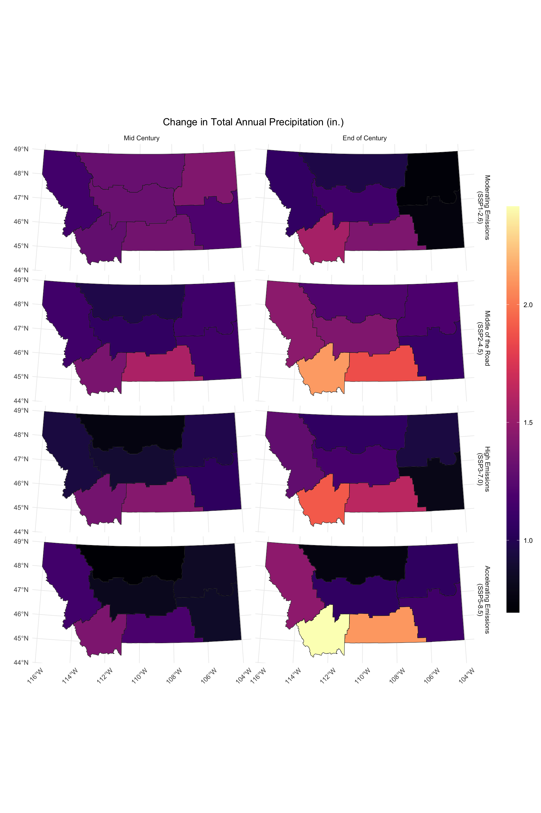
r params$attr_name in params$location over two periods 2040-2069 and 2070-2099 for all SSP scenarios.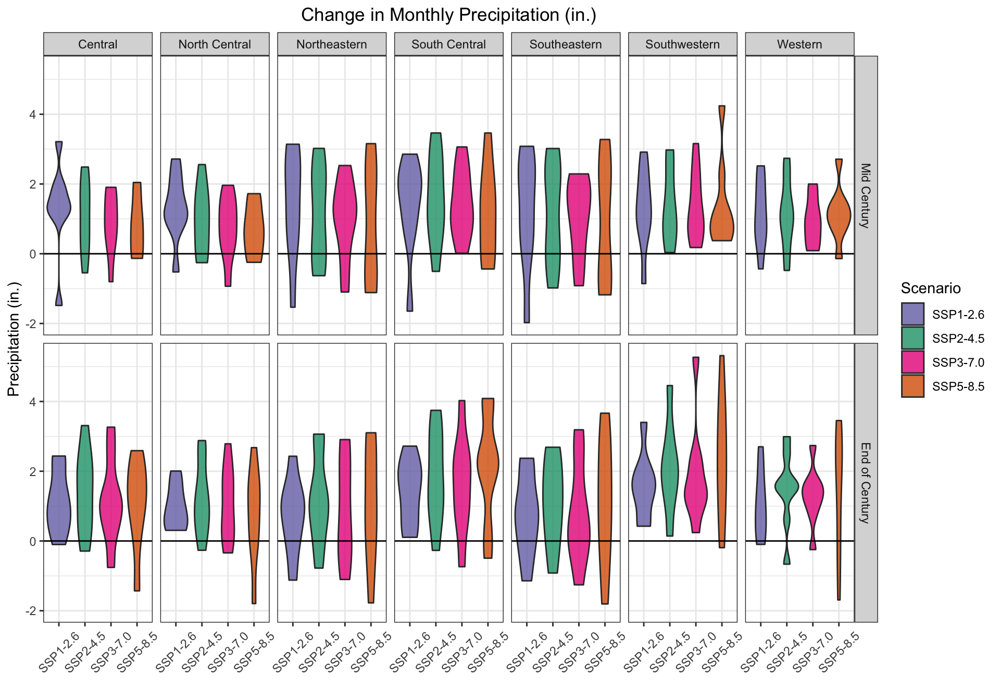
r params$attr_name for all SSP scenarios. The top row shows mid-century projections (2040-2069) and the bottom row shows end-of-century projections (2070-2099).4.3.2 Interannual Variability
Interannual variability (i.e., the amount precipitation changes from year to year) is projected to increase across the domain by mid century and increase by the end-of-century for the majority of SSP scenarios (Figure 4.12). These changes could be attributed to wet years getting wetter, dry years getting drier, or some combination of both.
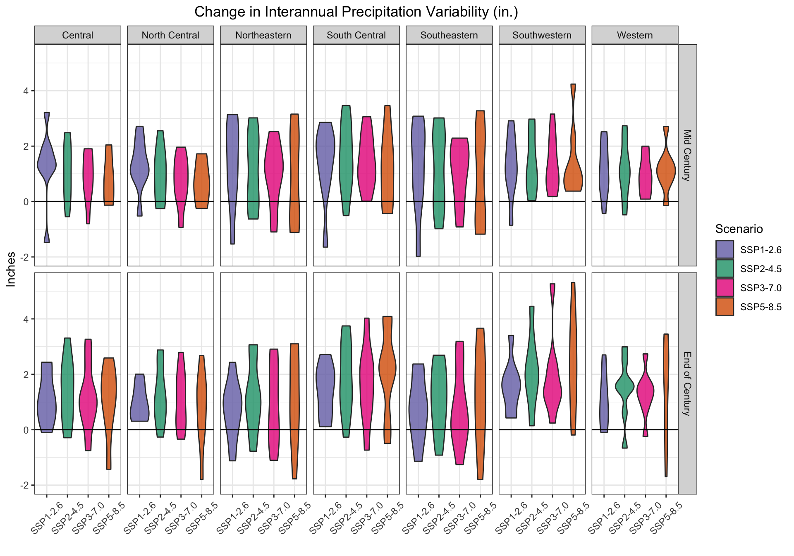
4.3.3 Monthly and Seasonal Change in Average Precipitation
Figure 4.13 shows projected changes in average monthly precipitation across all Climate Divisions for both the mid- and end-of-century. Below, projected changes in average monthly precipitation across the domain and associated model agreements are given:
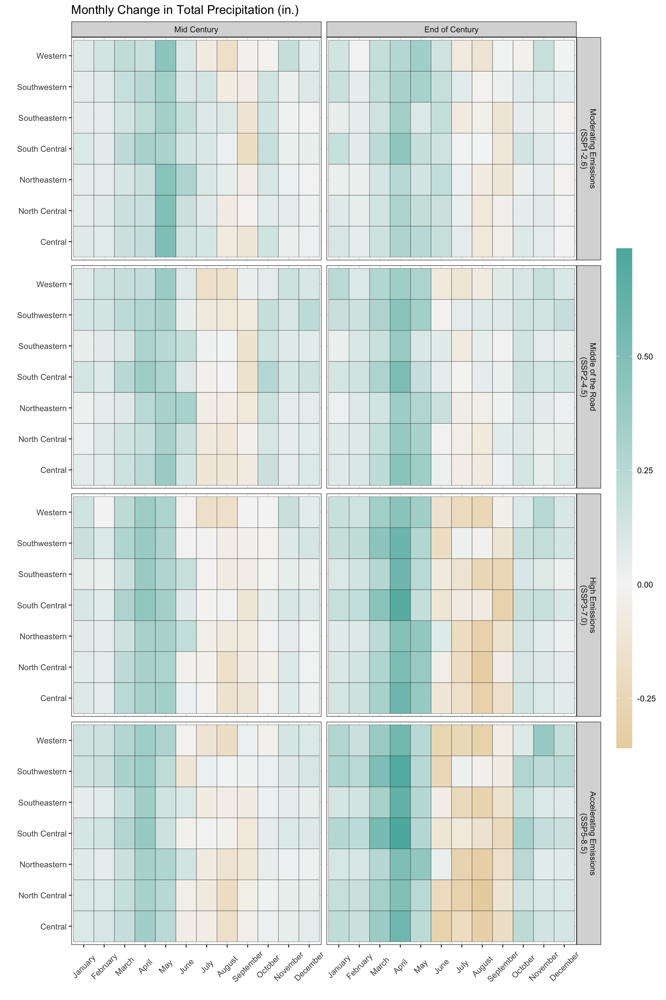
r params$attr_name in params$location in the mid-century projections (2040-2069) for all SSP scenarios.- Mid Century: Total Precipitation is projected to increase in the Winter, with values ranging from 0.06 inches to 0.1 inches (77% model agreement) depending on the SSP scenario. Total Precipitation is projected to increase in the Spring, with values ranging from 0.25 inches to 0.3 inches (91% model agreement) depending on the SSP scenario. Total Precipitation is projected to decrease in the Summer, with values ranging from -0.05 inches to 0.07 inches (65% model agreement) depending on the SSP scenario. Total Precipitation is projected to increase in the Fall, with values ranging from 0.01 inches to 0.06 inches (67% model agreement) depending on the SSP scenario.
- End of Century: Total Precipitation is projected to increase in the Winter, with values ranging from 0.05 inches to 0.17 inches (82% model agreement) depending on the SSP scenario. Total Precipitation is projected to increase in the Spring, with values ranging from 0.23 inches to 0.42 inches (90% model agreement) depending on the SSP scenario. Total Precipitation is projected to decrease in the Summer, with values ranging from -0.2 inches to 0.04 inches (67% model agreement) depending on the SSP scenario. Total Precipitation is projected to increase in the Fall, with values ranging from 0.03 inches to 0.09 inches (74% model agreement) depending on the SSP scenario.
4.3.4 Projected Changes in Consecutive Dry Days
To assess changes in the frequency of dry events, we determined the annual number of dry days (defined as days when precipitation is less than 0.01 inch [0.03 cm]), then calculated the maximum number of consecutive dry days/yr averaged over the 30-year periods of interest. Across the domain, we found a increase in consecutive dry days for the mid-century across the all SSPs (65.25% agreement) and a increase in consecutive dry days for the end-of-century across the all SSPs (75% agreement). Figures Figure 4.14 and Figure 4.15 show changes in projected number of dry days across Climate Divisions and domain-wide projections for mid- and end-of-century are given below:
- Mid-century: Across the domain, the majority of SSP scenarios project that the annual number of consecutive dry days in the mid-century will increase. Changes in annual number of consecutive dry days across SSPs range from 0.78 days (62% model agreement) to 1.5 days (75% model agreement)
- End-of-century: Across the domain, the majority of SSP scenarios project that the annual number of consecutive dry days in the end-of-century will increase. Changes in annual number of consecutive dry days across SSPs range from 1.3 days (62% model agreement) to 3.27 days (75% model agreement)
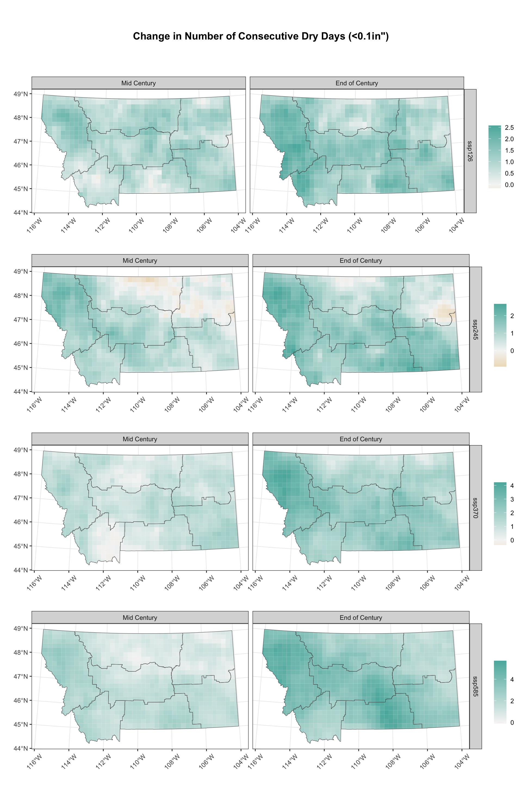
r params$attr_name in params$location over two periods 2040-2069 and 2070-2099 for all SSP scenarios.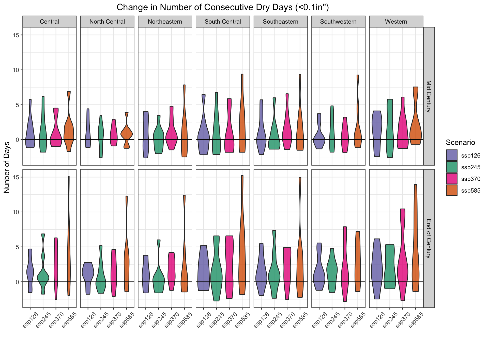
4.3.5 Projected Change in Wet Days
To evaluate changes in wet events, we calculated the number of days/yr where precipitation is greater than 1.0 inch (2.5 cm) and average those values over the period of interest. Figures Figure 4.16 shows changes in projected number of wet days across Climate Divisions and domain-wide projections for mid- and end-of-century are given below:
- Mid-century: Across the domain, the majority of SSP scenarios project that the annual number of consecutive wet days in the mid-century will increase. Changes in annual number of consecutive wet days across SSPs range from 0.11 days (88% model agreement) to 0.13 days (100% model agreement)
- End-of-century: Across the domain, the majority of SSP scenarios project that the annual number of consecutive wet days in the end-of-century will increase. Changes in annual number of consecutive wet days across SSPs range from 0.12 days (100% model agreement) to 0.19 days (100% model agreement)
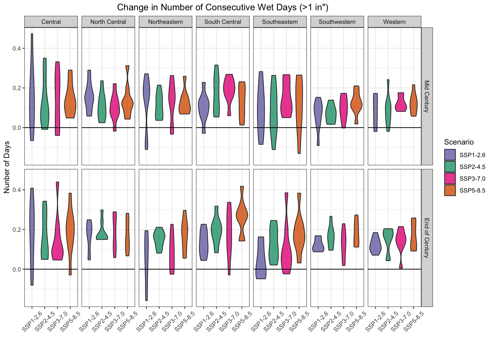
r params$attr_name in all SSP scenarios. The top row shows projections for mid century (2040-2069) and the bottom row shows projections for end-of-century (2070-2099).4.3.6 Summary
Ask team about this